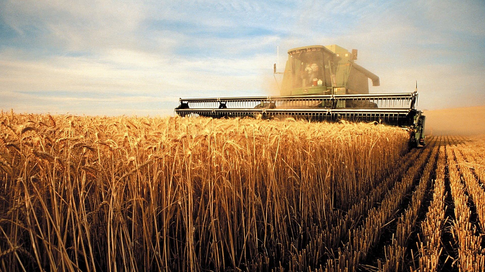
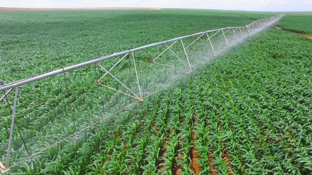
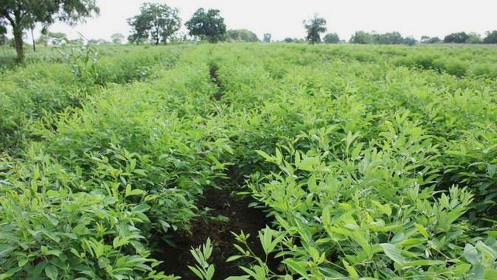
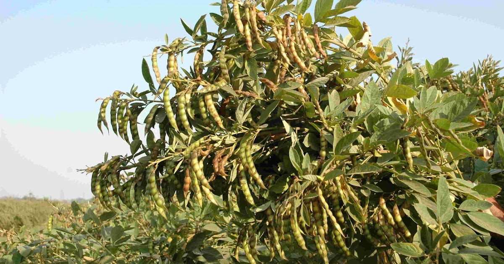
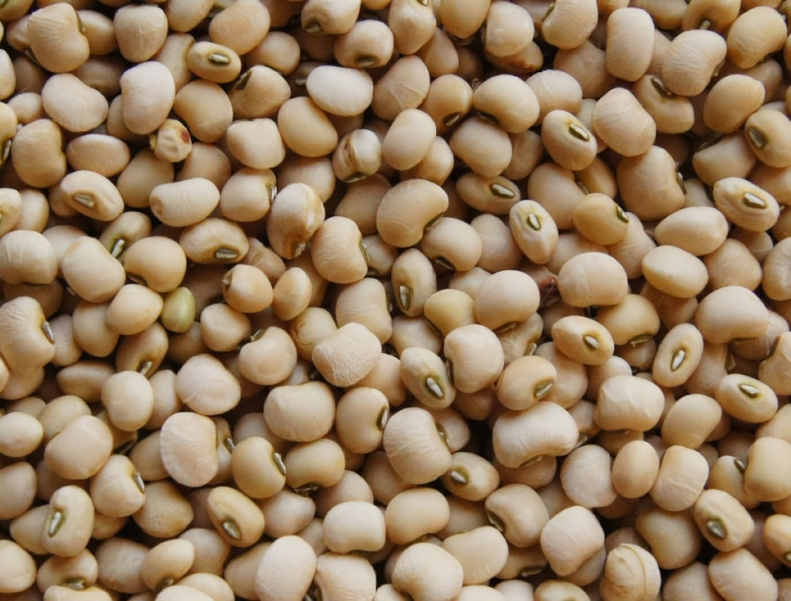

अरहर की खेती और रोग रोकथाम





भारत देश में अरहर को अरहर, तुर, रेड ग्राम, व पिजन पी के नाम से जाना जाता है। अरहर की दाल प्रोटीन का विशेष स्रोत है |
प्रोटीन की कमी से ही हमारा शारीरिक व मानसिक विकास रुक जाता है ।
अरहर नम तथा शुष्क जलवायु का पौधा है | इसकी वानस्पतिक वृद्धि व बढवार के लिए नम जलवायु की आवश्यकता होती है |
अरहर के पौधे में फूल, फली व दाने बनते समय शुष्क जलवायु की आवश्यकता होती है | 75 से 100 सेंटीमीटर वाले स्थानों में अरहर की खेती सफलतापूर्वक की जा सकती है |
किसान भाई अरहर की खेती (Arhar ki kheti) भारी वर्षा वाले स्थानों में बिलकुल न करें |
अच्छी पैदावार के लिए जीवांश युक्त बलुई दोमट वा दोमट भूमि अच्छी होती है। उचित जल निकास तथा हल्के ढालू खेत अरहर के लिए सर्वोत्तम होते हैं।
लवणीय तथा क्षारीय भूमि में इसकी खेती सफलतापूर्वक नहीं की जा सकती है। अरहर की खेती काली मृदा में भी सफलतापूर्वक की जा सकती है |
अच्छी जल धारण व चूने की पर्याप्त उपलब्धता वाली भूमि में अरहर की खेती से अधिकतम उत्पादन लिय जा सकता है |
गर्मी के खेती की जुताई देशी हल से करें । देशी हल अथवा बड़े क्षेत्र में ट्रैक्टर से कल्टीवेटर से 2 से 3 जुताइयाँ करें ।
गोबर की खाद खेतों में बिखेर दें । धूप लगने से खेतों में मौजूद कीड़े व कवक भी नष्ट हो जाएँगे ।
जुताई के बाद पाटा लगाकर खेत को तैयार कर लेना चाहिए।
अरहर की बुवाई का समय
रहर की खेती से अच्छी पैदावार के लिए अरहर की खेती (Arhar ki kheti) वैज्ञानिक तरीक़े से करना चाहिए ।
वैज्ञानिकों द्वारा अरहर की बुवाई का समय अगेती व सिंचाई वाले इलाक़ों में 15 जून तक व देर से पकने वाली अरहर की उन्नत क़िस्मों की बुवाई जुलाई महीने में करनी चाहिए ।
इसे ऐसे भी समझ सकते हैं कि जो क़िस्में 270 दिन में पकती है उनकी बुवाई जुलाई महीने में पूरी कर लेनी चाहिए ।
अरहर की टा-21 प्रजाति को अप्रैल 15 अप्रैल तक बोने से अच्छी पैदावार मिलती है ।
अधिक उपज लेने के लिए (प्रदेश के मैदानी क्षेत्रों में तरार्इ को छोड़कर) ग्रीष्म कालीन मूंग के साथ सह-फसल के रूप में बोने के लिए जायद में बल दिया जा चुका है।
बीज की मात्रा तथा बुवाई विधि
बुवाई हल के पीछे कूंड़ों में करनी चाहिए। प्रजाति तथा मौसम के अनुसार बीज की मात्रा तथा बुवाई की दूरी निम्न प्रकार रखनी चाहिए।
बुवाई के 20-25 दिन बाद पौधे की दूरी, सघन पौधे को निकालकर निश्चित कर देनी चाहिए। यदि बुवाई रिज विधि से की जाए तो पैदावार अधिक मिलती है।
अगेती किस्म के लिए 12 से 15 किलो ग्राम तथा पिछेती क़िस्मों के लिए भी 15-18 किलो ग्राम बीज की मात्रा प्रति हैo उपयुक्त होता है ।
बुवाई की दूरी 60 X 20 रखनी चाहिए । वहीं देर से बुवाई की जाने वाली क़िस्मों में 60 X 20 सेमी0 की दूरी रखनी चाहिए ।
पूर्वी उत्तर प्रदेश में बाढ़ या लगातार वर्षा के कारण बुवाई में विलम्ब होने की दशा में सितम्बर के प्रथम पखवारे में बहार की शुद्ध फसल के रूप में बुवाई की जा सकती है,
परन्तु कतार से कतार की दूरी 30 से.मी. एवं बीज की मात्रा 20-25 कि.ग्रा./हे. की दर से प्रयोग करना चाहिए।
खाद तथा उर्वरकों का प्रयोग
अरहर की अच्छी उपज लेने के लिए 10-15 कि.ग्रा. नत्रजन, 40-45 कि.ग्रा. फास्फोरस तथा 20 किग्रा. सल्फर की प्रति हे. आवश्यकता होती है।
अरहर की अधिक से अधिक उपज के लिए फास्फोरस युक्त उर्वरकों जैसे सिंगल सुपर फास्फेट, डाई अमोनियम फास्फेट का प्रयोग करना चाहिए।
सिंगिल सुपर फास्फेट प्रति हे. 250 कि.ग्रा. या 100 कि.ग्रा. डाई अमोनियम फास्फेट तथा 20 किग्रा. सल्फर पंक्तियों में बुवाई के समय चोंगा या नाई सहायता से देना चाहिए
जिससे उर्वरक का बीज के साथ सम्पर्क न हो।
सिंचाई तथा जल प्रबन्धन
अरहर टा-21 तथा यू.पी.ए.एस.-120 तथा आई.सी.पी.एल.-151 को पलेवा करके तथा अन्य प्रजातियों को वर्षाकाल में पर्याप्त नमी होने पर बोना चाहिए।
खेत में कम नमी की अवस्था में एक सिंचाई फलियां बनने के समय अक्टूबर माह में अवश्य की जाय।
देर से पकने वाली प्रजातियों में पाले से बचाव हेतु दिसम्बर या जनवरी माह में सिंचाई करना लाभप्रद रहता है।
खरपतवार नियंत्रण
अरहर के खेत में चौड़ी पत्ती वाले खरपतवारों के लिए एलाक्लोर 50 डब्लू.पी. लासो को 4.0 से 5.0 किग्रा. की दर से बुवाई के दो दिनों में प्रयोग करें ।
अथवा फ्लूक्लोरेलिन 45 ई.सी. बेसलिन 1500-2000 मिली.को 600 से 800 मिली. बुवाई के तुरन्त पहले स्प्रे करने के बाद मृदा में मिला दें ।
केवल घास कुल के खरपतवारों के नियंत्रण के लिए क्विजैलोफाप 5 ई.सी. टर्गासुपर 800-1000 मिली बुवाई के 15-20 दिन बाद प्रयोग करें
फसल की कटाई
अरहर के पौधों पर लगी 80 प्रतिशत फलियाँ पककर भूरे रंग की हो जाएँ | किसान भाई तब फसल की कटाई कर लें |
कटाई के एक 7 से 10 सिन बाद जब पौधे पूरी तरह सूख जाएँ तब लकड़ी से पीट-पीटकर अथवा जमीन में पटक कर फलियों को अरहर के पेड़ से अलग कर लें |
इसके बाद किसान भाई डंडे अथवा बैलों की सहायता से अरहर के दाने निकाल लें |
दानों को 7 से 10 दिन धूप में सुखाकर 8 से 10 प्रतिशत नमी रह जाने पर भंडारित कर लेना चाहिए |